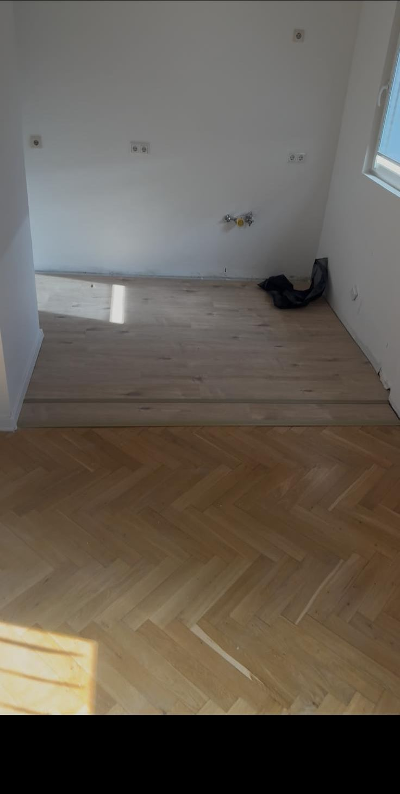
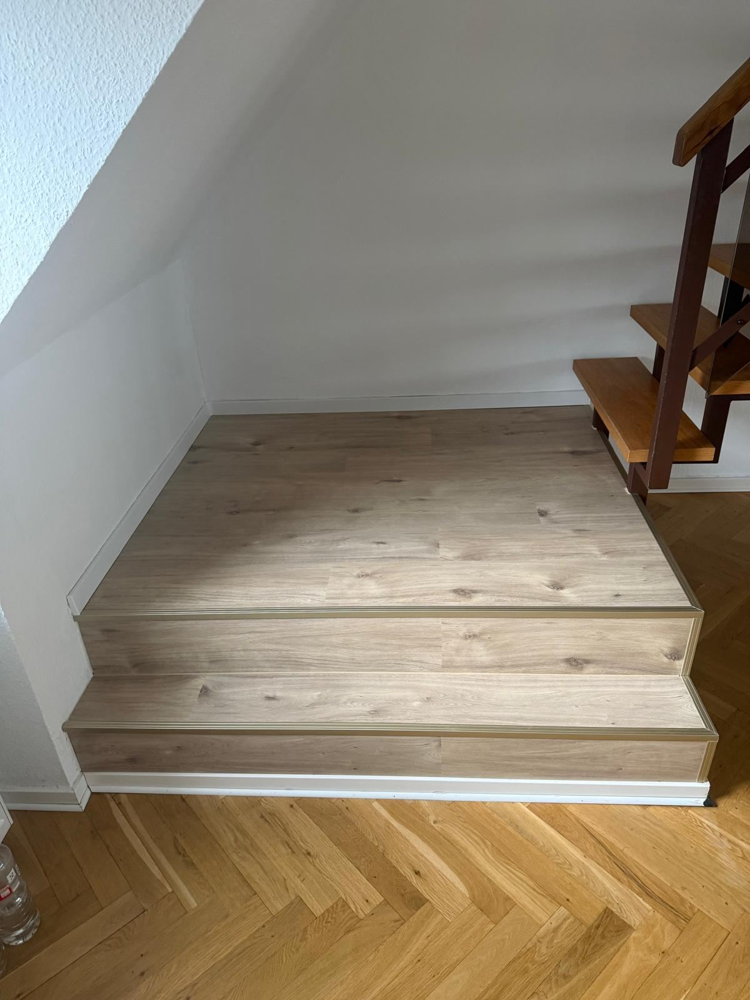
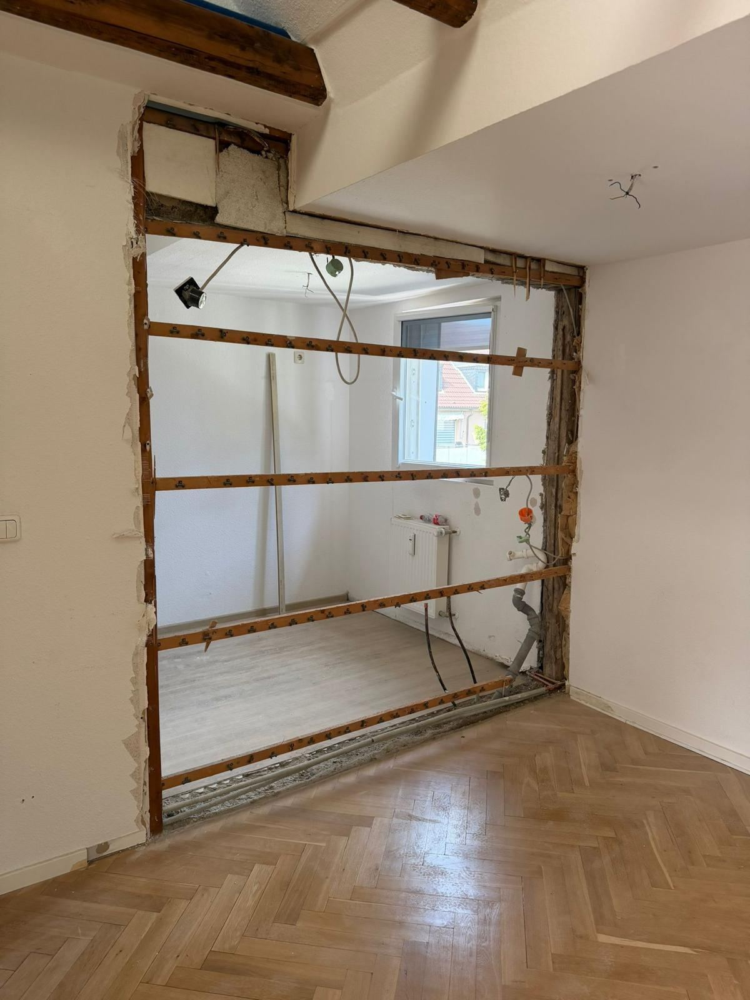

Essen und 25 km Umkreis
Sanierung in Essen – Böden, Innenausbau, Maler, Fassade
Ob einzelner Raum, ganze Wohnung oder Balkon: Wir sanieren innen und außen und stimmen alle Schritte aufeinander ab – bis zur sauberen Übergabe.

Unsere Arbeitsweise
Alles zwischen Rohbau und Einzug
Bei einer Sanierung zählt die Reihenfolge: erst Rückbau und Durchbrüche, dann Leitungen, dann Trockenbau, Boden und Farbe. Weil Elektro und Sanitär bei uns im Haus sind, greift das ineinander.
Außen erneuern wir Balkone, Brüstungen und Terrassen und organisieren Gerüst, Aufmaß und Entsorgung gleich mit.
- Böden und Treppen verlegen, aufarbeiten, sanieren
- Innenausbau und Trockenbau
- Malerarbeiten innen und außen
- Balkon, Terrasse und Fassade
- Gerüst, Aufmaß und Entsorgung organisiert
Was dazugehört
Innen und außen.
Aus unseren Projekten
So sieht das bei uns aus.






Häufige Fragen
Gut zu wissen.
Kann man alte Dielen erhalten?
Oft ja. Solange die Dielen tragfähig sind, lassen sie sich schleifen und neu versiegeln. Wir schauen uns den Boden an und sagen Ihnen ehrlich, ob sich das lohnt.
Machen Sie auch Wanddurchbrüche?
Ja. Bei tragenden Wänden braucht es eine Statik und eine fachgerechte Abfangung – das klären wir vorab mit Ihnen.
Gibt es für Balkone einen Aufmaßtermin?
Ja. Für Brüstungen und Balkone kommen wir zum Aufmaß vor Ort. Die Kosten dafür besprechen wir vorher mit Ihnen.
Kontakt
Sprechen wir über Ihr Vorhaben.
Rufen Sie an oder schicken Sie uns ein paar Eckdaten – wir melden uns mit einer ehrlichen Einschätzung.
Unverbindlich anfragenWeitere Bereiche